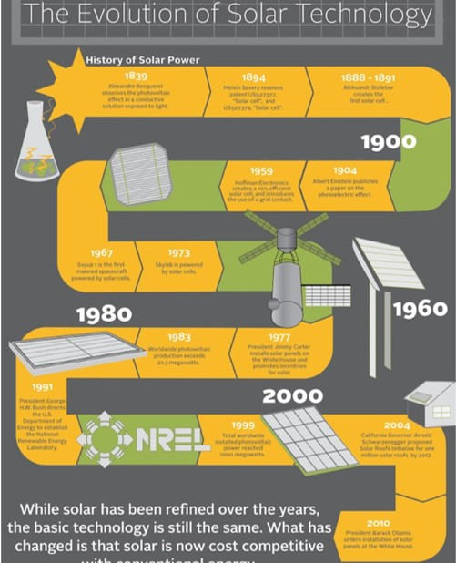
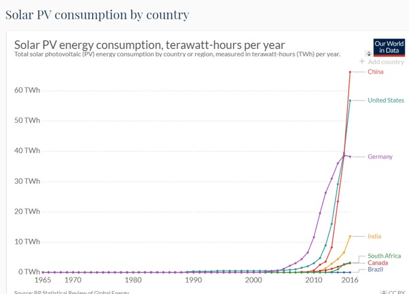

Introduction
Solar energy is the technology used to harness the sun's energy and make it useable. As of 2011, the technology produced less than one tenth of one percent of global energy demand
Brief History
- 1839: French physicist Alexandre-Edmond Becquerel (father of radioactivity pioneer Henri Becquerel) discovers some metals are photoelectric: they produce electricity when exposed to light. 
- 1905: German-born physicist Albert Einstein figures out the physics of the photoelectric effect, a discovery that eventually earns him a Nobel Prize.
- 1916: American physicist Robert Millikan proves Einstein's theory experimentally.
- 1940: Russell Ohl of Bell Labs accidentally discovers that a doped junction semiconductor will produce an electric current when exposed to light.
- 1958: Vanguard, Explorer, and Sputnik space satellites begin using solar cells.
- 2009: Scientists discover that perovskite crystals have great potential as third-generation photovoltaic materials
- 2014: A collaboration between German and French scientists produces a new record of 46 percent efficiency for a four-junction solar cell
- 2020: Solar cells are predicted to achieve grid parity (solar-generated electricity you make yourself will be as cheap as power you buy from the grid).
Stats
Despite the drawbacks,  solar energy use has surged at about 20 percent a year over the past 15 years, thanks to rapidly falling prices and gains in efficiency. Japan, Germany, and the United States are major markets for solar cells. With tax incentives, and efficient coordination with energy companies, solar electricity can often pay for itself in five to ten years.